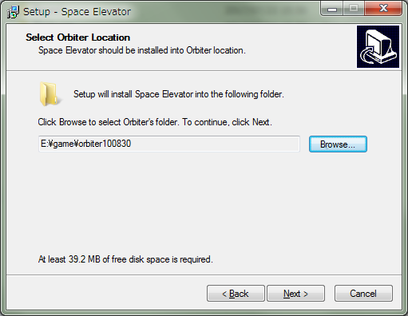

Space Elevator MODのダウンロード+インストール
Space Elevator, release 4は、Orbiterで軌道エレベータを再現するMODです。
Orbiter2010・Orbiter2016のどちらでも使えます。
ダウンロード
ダウンロードは以下のリンクから。
インストール
SpaceElevator4.zipを解凍する。
中に入っているSpaceElevatorSetup.exeをダブルクリック。
Nextをクリックして、出てきた画面でBrowseをクリック。
Orbiterのインストールフォルダを指定して、Nextを何度かクリックする。

JSGMEを使いたい場合は、あらかじめ空のフォルダを用意する。
そのフォルダをインストール先に指定すると、そこにMODファイルが吐き出されるので、通常のMODと同じようにJSGMEを使うことができる。
Configファイルの書き換え
このMODのような一部の基地追加MODでは、Earth.cfgを編集する必要があります。
重要：あとでMODを外したい場合は、Earth.cfgのバックアップを保存してください。
Orbiter\Configフォルダの中にある、Earth.cfgをメモ帳などで開く。
BEGIN_SURFBASEとEND_SURFBASEのあいだに以下の行を追加する。
SRC_Lift: +101.60 +0.00編集が終わったら、上書き保存する。
重要：ほかのMODによって、すでにEarth.cfgが編集されていることがあります。
軌道エレベータを使う
重要：軌道エレベータが存在するシナリオでは、タイムワープが100倍速に制限されます。
キー操作一覧
| G | ドッキング用のチューブを展開・格納 |
| K | 貨物室のドアを開閉 |
| S | 運転・停止 |
| D | 目的地の変更 |
| J | 積んでいる宇宙船などを投下 |
| Ctrl+J | 積んでいる宇宙船を投下して、その船に乗り換える |
| E | 緊急停止 |
| 矢印キー↑or↓ | 2Dコクピットのパネルを上下に動かす |
Space Elevatorフォルダの同名のシナリオを選んでゲーム開始。
重要：まず最初に、Gを押してドッキングを解除する。
F8を押してコクピット画面に切り換える。
三角のボタンをクリックして目的地を選択したら、GOをクリック。
MODEボタンをクリックすると、ペイロードの分離などの画面に切り替えることができます。
静止軌道ステーション
静止軌道(Geostationary Orbit)には基地とドッキングポートが設置されています。
ただしドッキングポートにバグがあるため、正常に接続・分離できなくなっています。
シナリオエディタを使うことで、強制的に分離させることができます。
地上などから直接この基地まで飛ぶ場合は、この静止軌道ステーションに
あらかじめターゲットとなる宇宙船をドッキングさせておきます。
TransXなどでこの船をターゲットに指定すれば、あとは普通に飛ぶだけです。
【TransX】静止軌道へ行く方法
ドッキングとセーブ・ロード
バグがあるため、静止軌道基地に船がドッキングしているとセーブ・ロードができません。
セーブする場合は事前にドッキングポートから宇宙船を切り離してください。